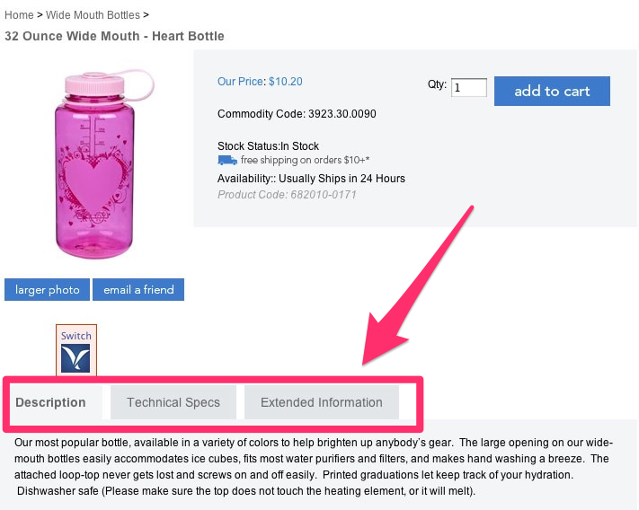
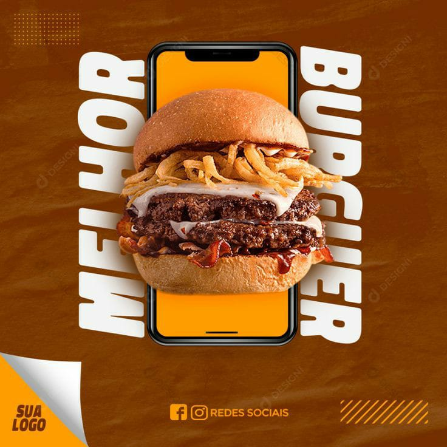
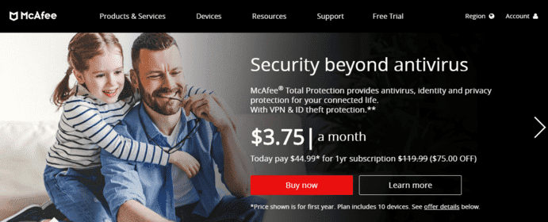
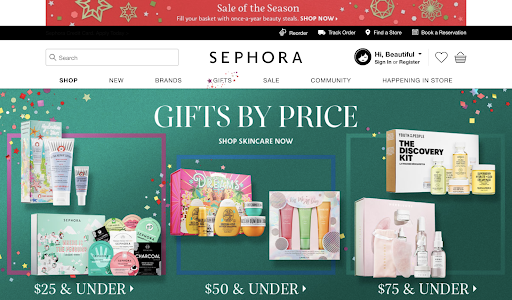

These steps will be super useful for those who work in the marketing business, or even for those who want to start their business from home.
Internet sales have grown considerably nowadays, which has led physical store owners to also sell online. In addition to reaching the local audience, it is possible to sell to new audiences and strengthen the brand at a national level.
Bruno de Oliveira, a specialist in e-commerce and creator of Ecommerce at Practice.com, explains that, on the internet, it is not enough to create a website and put several products on it. It is necessary to clearly exposing the characteristics of each item, creating quality descriptions, making the product more attractive and highlighting all the differentials of what you want to sell.
"The rate of people entering the virtual store and not buying varies depending on the type of product sold and the characteristics of the site. There is no magic that answers this question for all stores, so the retailer needs to make use of digital tools that show why your visitor is leaving with an empty cart", comments the expert.
The internet is an environment that offers a series of tools to promote products. Social medias, for example, are great for building strong relationships with customers and getting to know them better. So, to make good use of these medias, we have separated 7 steps that will help you make the products in your online store more attractive:
Careful in the product description
In the product description, put all the information that can be useful and attractive to the consumer. The text must be clear, objective and unambiguous. Explain clearly the product, their functions and if there are compatibilities or incompatibilities. Don't forget to show the dimensions and weight, so the cost of shipping must be clear to those who buy it.

An example of product information tabs. Image from: Neil Patel
Invest in good quality photos
Product images need to be of good quality and must conform to the product description. Some manufacturers make good quality photos available, but sometimes the retailer will need to produce them.

The need for good photos is very much represented in the food industry, as it needs to be something that arouses the client's hunger.
In this video we can see how to take good products photos.
Example in portuguese.
Produce simple videos that value the item
Just like photos, simple videos can be produced by anyone, with a minimum of equipment, willingness and common sense. Videos can be exposed only with links, so as not to overload the page too much.
Sample video showing the usefulness of certain products.
Leave the purchase button always visible
Some retailers are so exaggereted in their content that they make the potential consumer get lost in so much information.
However, the 'Buy' button is the fundamental element of the website and the first of the 'tricks' that the retailer needs to pay attention to.

'Buy' button highlighted by red color. Image from: Neil Patel
Offer good discounts on the product you want to sell and an easy payment option
As in traditional retail, promotions, discounts and low prices are always good bait, and usually work well to break the resistance of the most demanding customers.
Attempt to offer good prices, that will not compromising the company's financial health. Remember that the first step in selling products at attractive prices is to find good suppliers.
Another important point regarding prices is the payment method. As the most used ways on the internet is the credit card, it is easier to offer several installment payments options. Many consumers prefer to pay a little more for certain products due to the possibility of paying more in installments.
Link the purchase to extra benefits
In addition to the competitive price and discounts, having a differential always influence the decision of the client to purchase a particular product. The most common ways are to offer gifts, loyalty cards or free shipping, but at this point, imagination is the limit.
To 'boost' the sales of a particular item, or a group of products, linking their purchase to one of these extra bonuses is a good idea.

Christmas promotion, which offered gifts based on the value of purchases. Image from: Noissue
Count On Good Shipping Options
We must not forget that products sold by an online store need to be delivered, so shipping is a fundamental part of the process. It's no use offering an incredible price if the fee charged for delivery is high. Therefore, search well to find companies that make these deliveries at attractive prices. Free shipping campaigns are another way to attract more customers.
Free shipping can be a good draw for customers.
Now that you know how to make your product more attractive, just put these 7 steps into practice and get successful results in your e-commerce.